Project 1 · Small-business automation service
Quickloop
Quickloop is a one-person business I started that sells packaged automations to small businesses in the Inland Empire: instant replies to new leads, proposals and contracts, and lead dashboards.
I built the public website, the self-hosted n8n server that runs the automations, and the sales tools I use myself. Those tools are buttons in my Notion CRM that research a lead's website and draft emails and call scripts with Claude.
- Role
- Founder. Design, code, infrastructure and sales
- Stack
- n8n (self-hosted), Claude API, Notion API, Gmail API, Google Docs/Sheets, Cloudflare
- Site
- Hand-written HTML/CSS/JS, no framework
- Live
- quickloop.dev
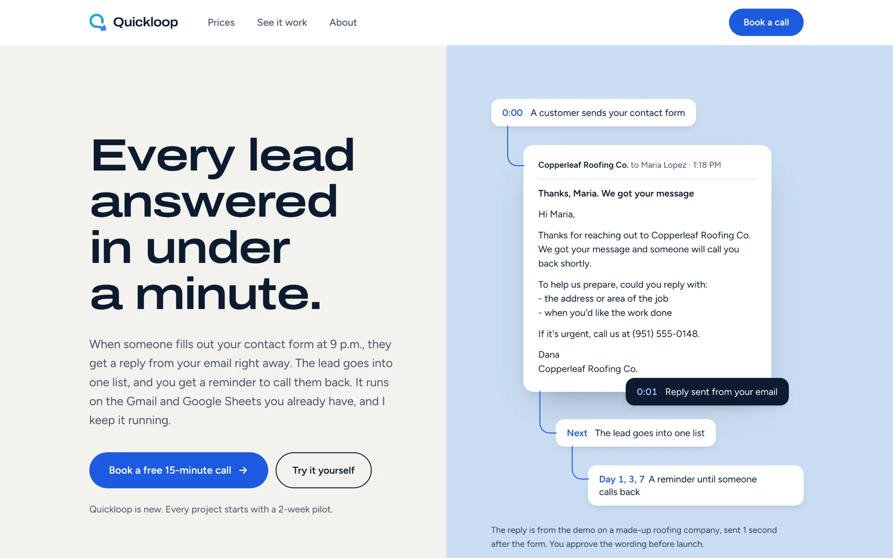
Automations
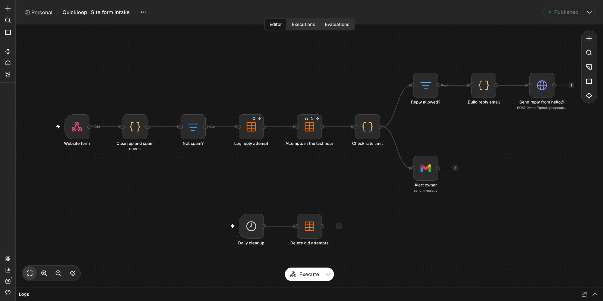
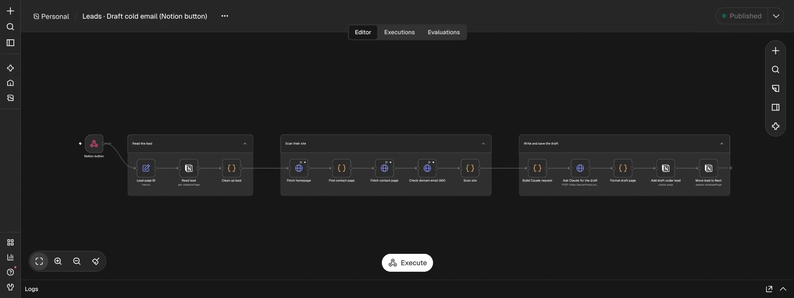
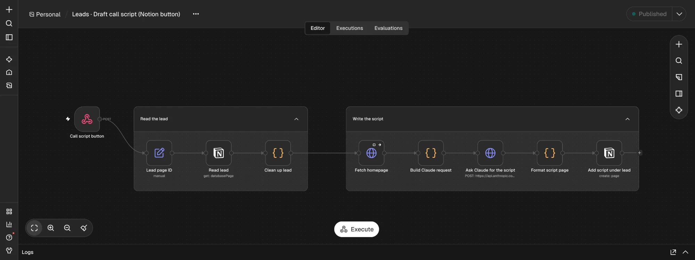
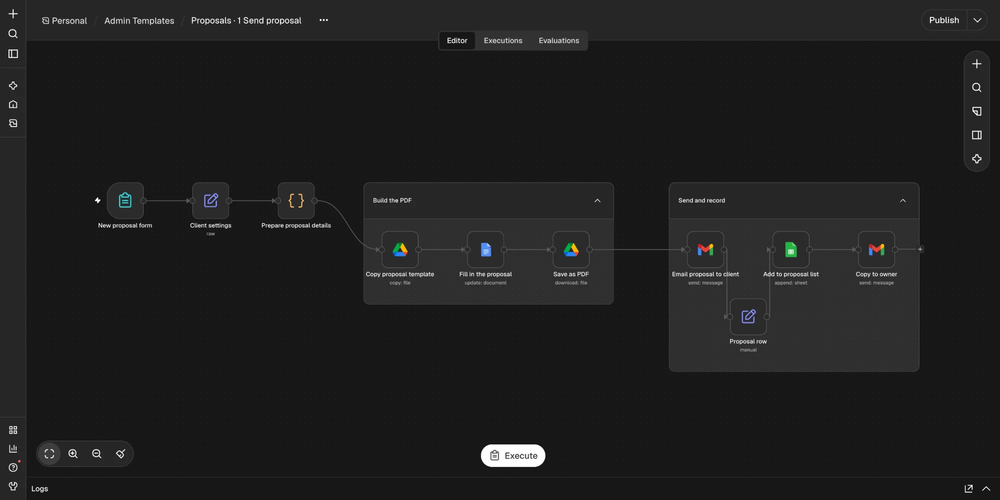
Project 2 · Personal AI agent system
Sleeper Agent
A self-hosted team of AI agents that runs around the clock. An orchestrator agent hands work to specialist agents for research, critique, analysis and building sites. The dashboard is where I talk to them, see what they did and what it cost, and approve anything risky.
I designed it so that safety is enforced in code rather than in prompts. Every agent has a tool allowlist and a daily budget. Actions with side effects wait for my approval. Content from email or the web is treated as untrusted data, and a kill switch stops all API calls.
- Role
- Sole designer and developer
- Stack
- Node.js 24, SQLite, Anthropic SDK, Playwright, vanilla JS dashboard
- Access
- Private over Tailscale, Telegram for phone approvals
- Tests
- 22 test files with Node's built-in test runner
- The orchestrator runs on Claude Opus. Smaller models handle digests, triage and nightly memory cleanup, which keeps costs down.
- Hard limits per agent and overall: a daily spend cap, an 8-step loop limit and a maximum delegation depth of 2.
- Secrets live in a vault and are inserted only when a tool runs, so prompts only ever see references, never the values.
- Every agent's spend is tagged, so the dashboard shows real-time cost against return for each project.
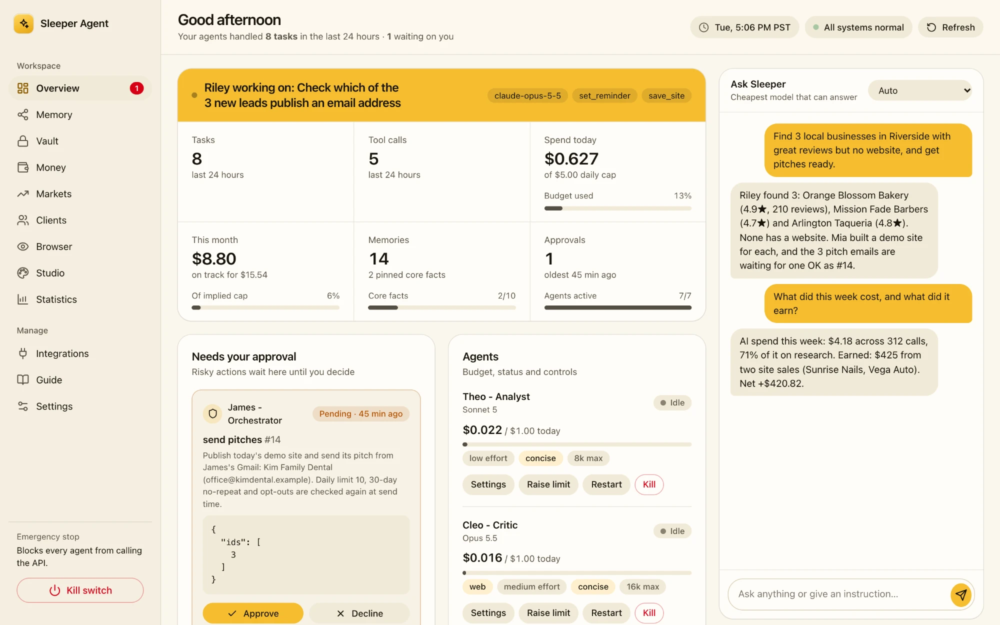
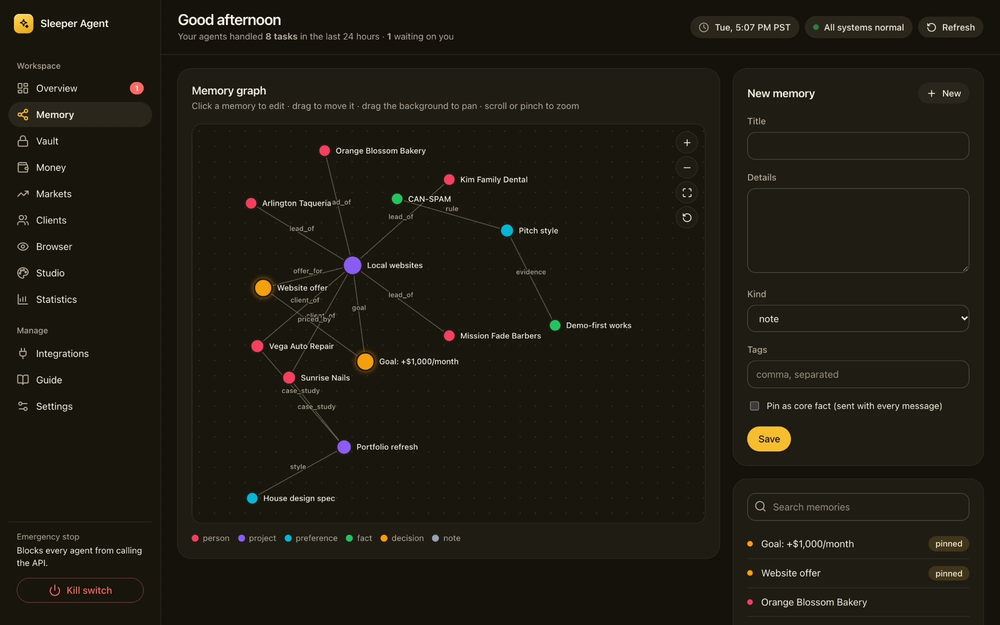
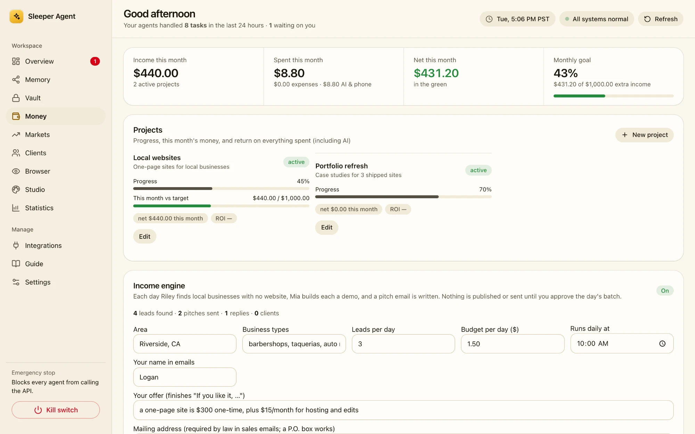
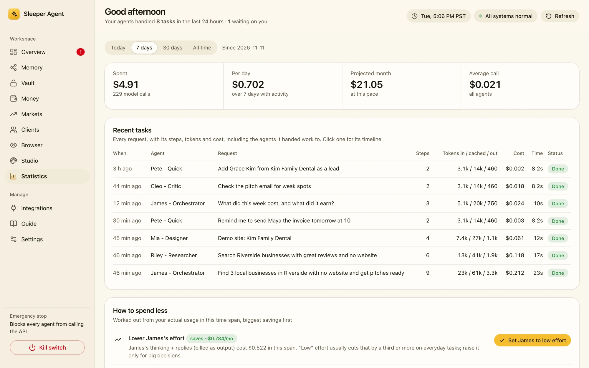
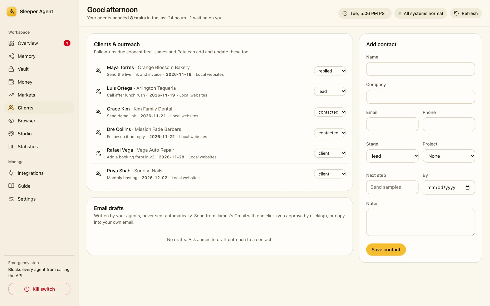
The Sleeper Agent screenshots show sample data I made for these images. The businesses, amounts and contacts in them are not real.
Project 3 · Part-time admin role, Letter Four
Letter Four operations
Letter Four is an architecture and interior design firm where I work part-time in admin. I automated how website inquiries reach the team and organized the firm's procedures into one searchable library in Notion.
- Role
- Part-time admin
- Tools
- Zapier, Webflow, Notion, Gmail, JavaScript
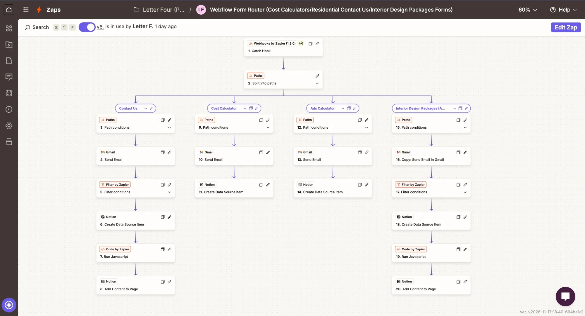
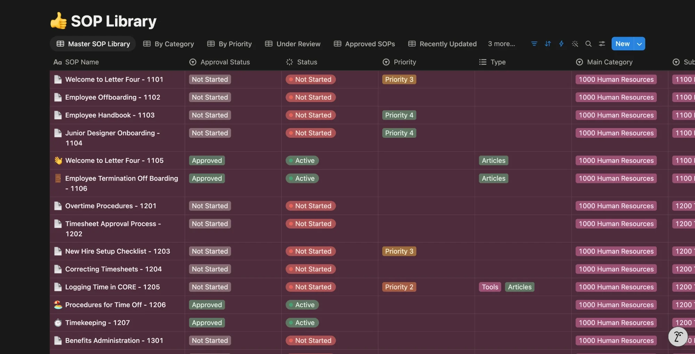
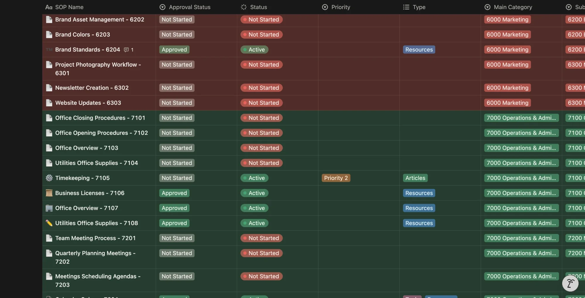
Some information in these screenshots is omitted or censored for company security.